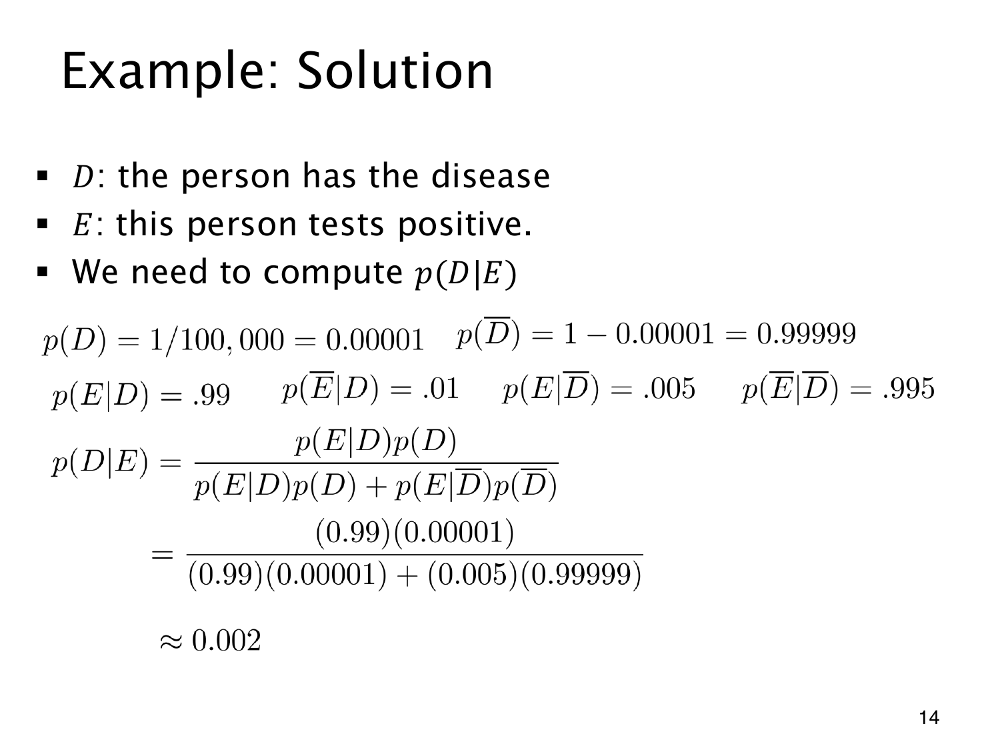

L1.10 · 第 14 页讲解原文
查看这一页课件

检测概率表怎样读
D 表示患病，E 表示阳性，先验是 p(D)=0.00001、p(D)=0.99999。模型的条件概率列成表为
| 真实状态 | 阳性 E | 阴性 E |
|---|---|---|
| 患病 D | 0.99 | 0.01 |
| 未患病 D | 0.005 | 0.995 |
每一行固定同一个真实状态，所以同行相加为 1。跨行的数字条件不同，不能据此当作互补概率。
计算按“某来源下的证据概率 × 来源先验”进行，再把所有来源的贡献相加：
p(E)=0.99(0.00001)+0.005(0.99999)=0.00500985.
患病且阳性的概率为 0.0000099，在全部阳性中归一化就得到
p(D∣E)=0.005009850.0000099≈0.0019761≈0.002.
课件的 0.002 是概率小数，约为 0.2%，并非 2% 或 0.002%。它高于原先的 0.001%，但绝对值仍小。对多个可能来源，也按各来源的贡献求和后归一化。